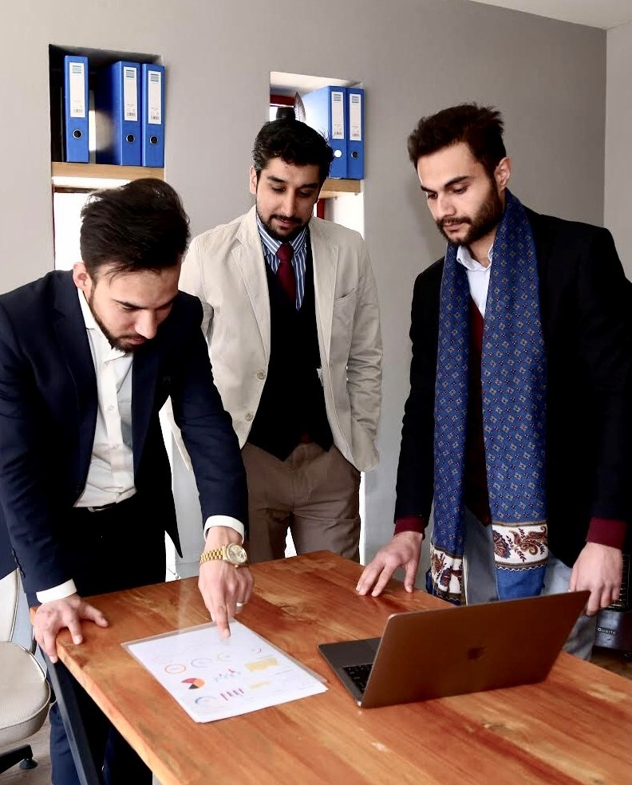
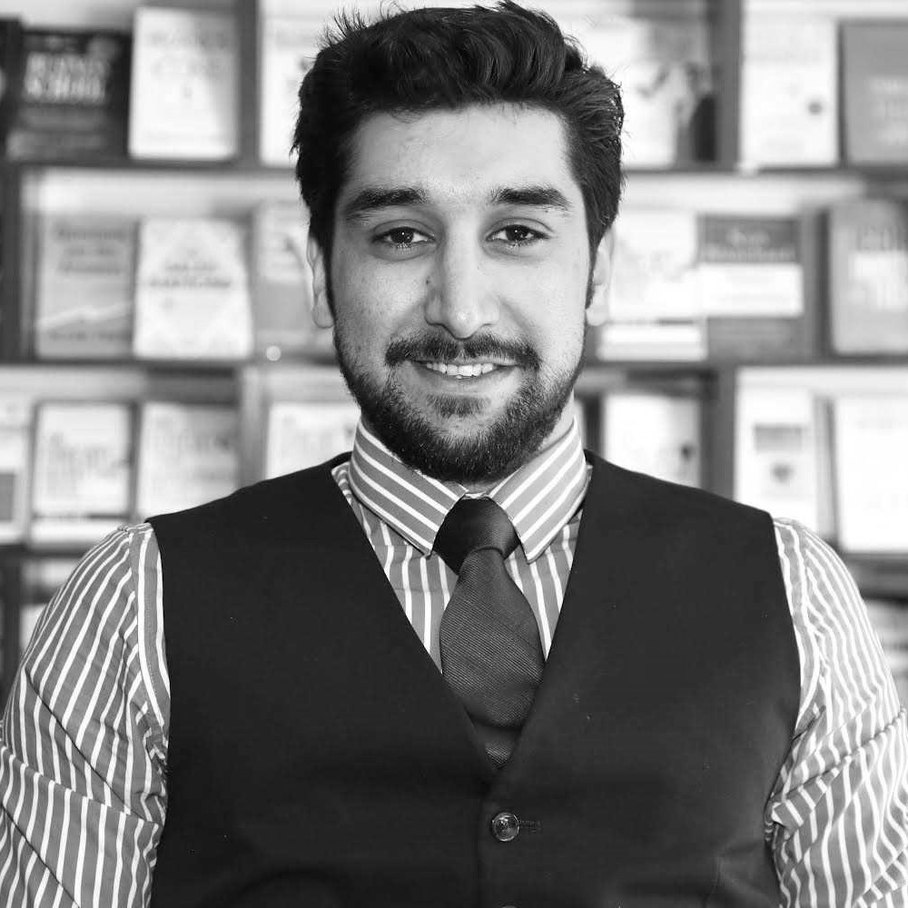
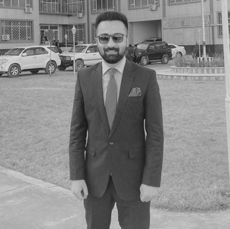
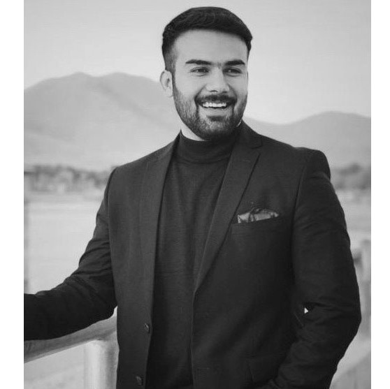
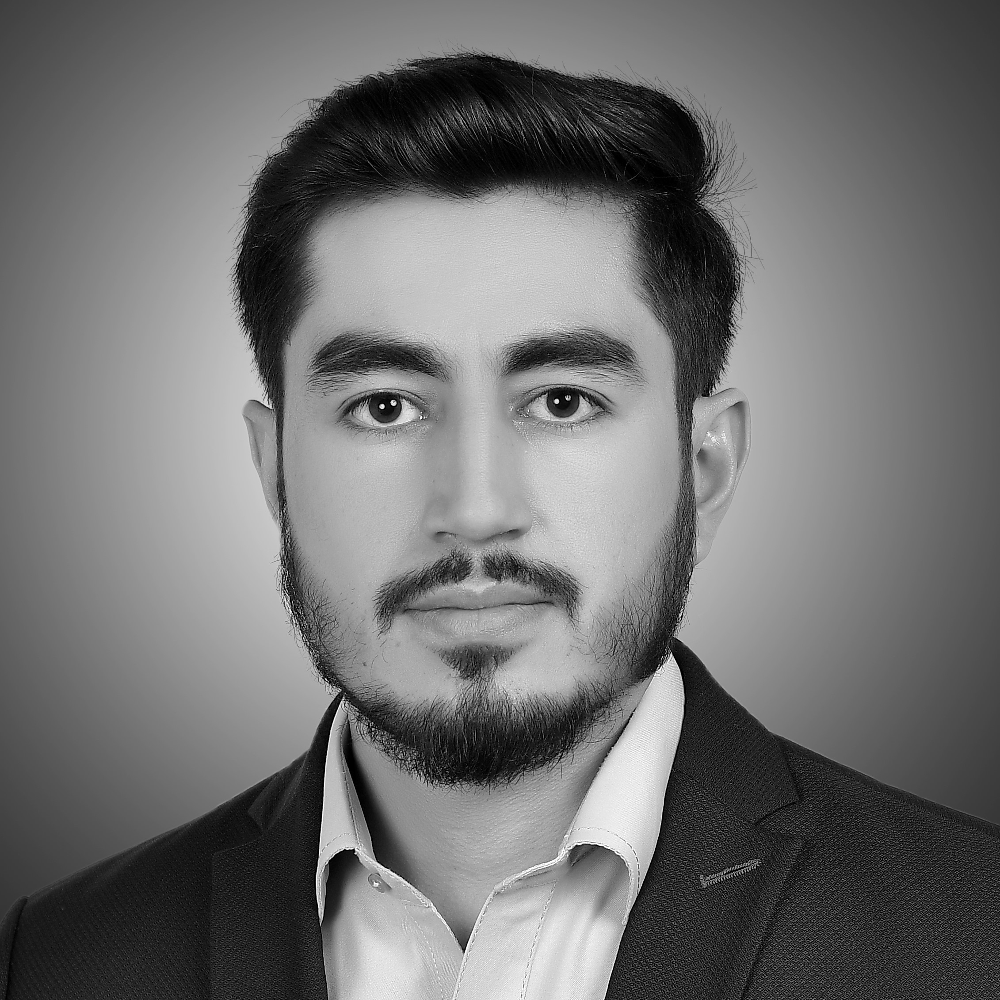
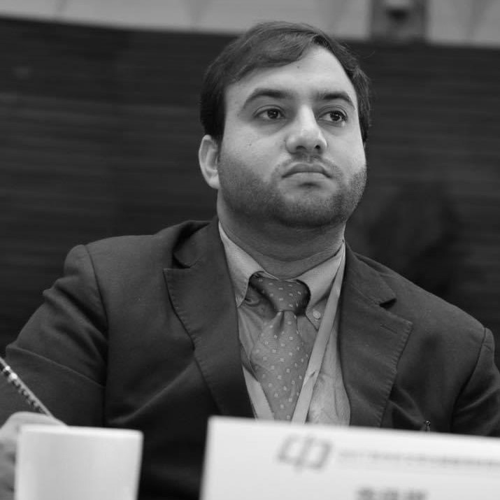
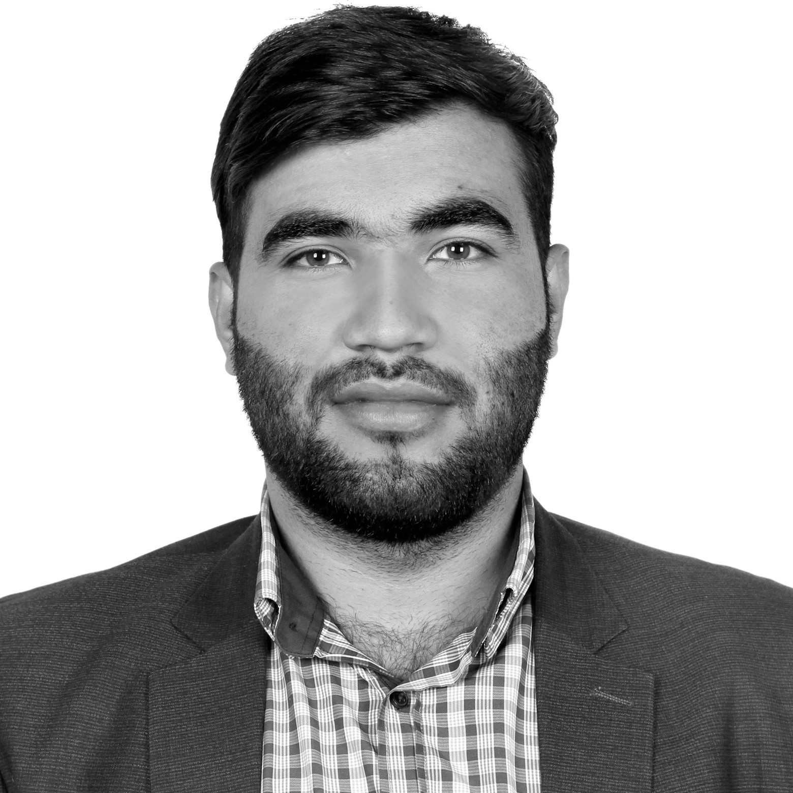
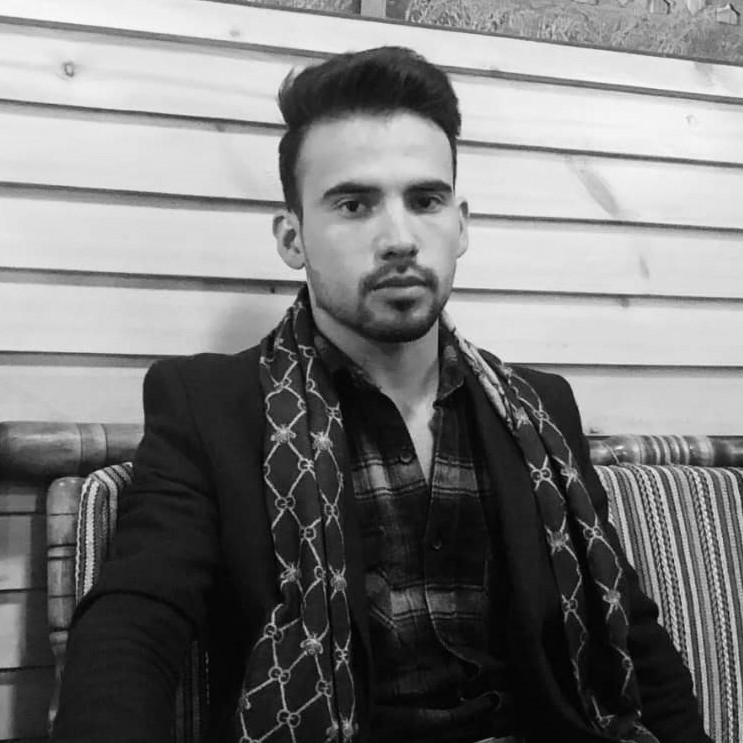

About
EPOCHO (Endeavor for Provision of Opportunities and Cooperation to Humanity Organization) is an Afghan non-profit, non-governmental and non-political organization founded in 2020. EPOCHO envisions Afghanistan as healthy, educated and prosperous state where all Afghans enjoy equal rights without any fear and discrimination and dedicated organization committed to making a positive and lasting impact in the realms of Education, Health, Humanitarian Response, and Women Empowerment. With an unwavering focus on creating a brighter future for all, we tirelessly work towards bridging the gaps, uplifting communities, and empowering individuals to thrive.
More info
Education lies at the core of our mission. We firmly believe that access to quality education is a fundamental right and a potent catalyst for social change. By implementing innovative programs and initiatives, we strive to enhance educational opportunities for underprivileged children and marginalized communities. Through the power of knowledge, we aim to break the cycle of poverty and empower individuals to unlock their full potential.
Our commitment to health is resolute. We understand that good health is not only essential for personal well-being but also a prerequisite for sustainable development. Our dedicated teams work tirelessly to improve healthcare access, promote preventive measures, and address pressing health challenges. By partnering with local communities and healthcare providers, we aim to create sustainable healthcare systems that leave a lasting impact.
During times of crisis and disaster, we stand ready to provide swift and effective humanitarian response. We believe in the power of compassion and solidarity to alleviate suffering and rebuild shattered lives. Our rapid response teams work on the ground, providing emergency relief, shelter, food, and medical aid to those affected by natural disasters, conflicts, and other emergencies. We prioritize the most vulnerable, ensuring that no one is left behind.
Women Empowerment is at the heart of our organization. We champion gender equality and work towards creating an inclusive society where women and girls can exercise their rights, fulfill their potential, and contribute meaningfully to their communities. Through comprehensive programs, advocacy, and capacity-building initiatives, we empower women to break through social barriers, gain economic independence, and become agents of change.
At EPOCHO, we believe that by working together, we can create a world where every individual has equal opportunities and access to basic necessities. We collaborate with local partners, governments, and other stakeholders and got partnership with Global Giving based in USA, NarinjTree Foundation, Afghanistan NCD Alliance and De Wolus Ghag High School, to ensure a sustainable and holistic approach to our projects. Our work is guided by integrity, transparency, and a deep respect for the dignity and diversity of the communities we serve. We have presence on the ground and can implement beneficial projects for people in need in any part of Afghanistan.
Join us on our journey as we strive to create a brighter and more equitable future. Together, we can make a difference and build a world where everyone can thrive

Learn About Us
EPOCHO
non-profit organization
EPOCHO (Endeavor for Provision of Opportunities and Cooperation to Humanity Organization) is an Afghan non-profit, non-governmental and non-political organization founded in 2020. EPOCHO envisions Afghanistan as healthy, educated and prosperous state where all Afghans enjoy equal rights without any fear and discrimination and dedicated organization committed to making a positive and lasting impact in the realms of Education, Health, Humanitarian Response, and Women Empowerment. With an unwavering focus on creating a brighter future for all, we tirelessly work towards bridging the gaps, uplifting communities, and empowering individuals to thrive.
EPOCHO influences, encourages, and assists Afghan society through investing programs to reach developmental goals
EPOCHO is determined to bring welfare and social development to societies by providing equal and indispensable opportunities.
Leading the team
Join us on our journey as we strive to create a brighter and more equitable future. Together, we can make a difference and build a world where everyone can thrive
Board of Directors
Executive Board
Board of Trustee

Ahmad Shahir Saifi
Founder and General Director
Ahmad Shahir Saifi, the visionary force behind EPOCHO—non-profit and non-political organization dedicated to transforming lives through its relentless efforts in the fields of Education, Health, Humanitarian Response, and Women Empowerment. He has degree at Economics, leadership and English Literature and has been recognized on Kardan University’s 40 UNDER 40 list—Award for young leaders who are under age 40 and have meaningful impact on their communities. With an unwavering commitment to social justice and a profound understanding of the power of collective action, Ahmad Shahir Saifi has founded EPOCHO with a group of educated and independent Afghans in 2020. Their legacy is not just the organization they founded, but the countless lives they have touched, the barriers they have shattered, and the hope they have ignited.

Adil Etibaar
Admin and Finance Director
Mr. Adel Etibaar is a social entrepreneur and investor whose mission in life is to explore an unlock opportunities for the benefit of humanity. Adel’s shared passion for community service prompted him to join EPOCHO with a bunch of like-minded people, an organization focused on shaping and reshaping the areas of crisis and contributing to social projects and rebuilding of a prosperous Afghanistan. He is also the founder of Angoora trade Co, HawalaGram and other ventures and initiatives, acceleration and targeting social impact investment. He is an alumni member of UIBE and holds an MBA degree from university of international business and economics.
Nigin Ayeen
Education Program Director
Ms. Ayeen holds a master´s degree of Teaching English as a Foreign Language (TEFL) from Kansas State University, USA. She has almost ten years´ experience in teaching English for general and specific purposes at the English Department, Kabul University and AUAF believing in practical teaching and student-centered learning because it helps students become autonomous and lifelong learners. She has earned a medal award and an International Diploma in Project Management and Leadership from United Nation´s Program for Afghanistan, Hiroshima Japan. Moreover, she has worked as the General Director for International Relations at Kabul University. Her volunteer experiences include many years of working with English Language Teachers´ Association for Afghans (ELTAA) and Kabul University. She believes that education is the key to success and happiness in life.

Taj Mohammad Mangal
Board Member
Goal-oriented Human Resources Specialist with nine years of experience in inspection of human resource day to day functions, functional review, organization development, and HR procedure and policy implementation for Da Afghanistan Bank and Independent Administrative Reform and Civil Service Commission. Strong acumen with demonstrated success in human resource management and organization structure review. Accomplished in analyzing company needs and developing long-term solutions to meet personnel objectives. Proficiency in human resource management and functional review of an organization. In-depth knowledge of employee management, HRMIS, Microsoft Office, basic networking, training program implementation and HR operational efficiency strategies. Mr. Mangal has earned his MBA degree from India. at Human Resource Management.

Saeed Alizahi
Health Program Advisor
Saeed Alizah is a MD graduated from Ankara University and he is residing in Turkey at the moment. His primary field of work includes clinical research and health science. He has been an active member of Ankara University Stem cell club which aims to research and find new techniques and advances in the field. He started his journey with EPOCHO since last year as Health Program Advisor.

Lal Mohammad Mangal
Monitoring and Evaluation Manager
Mr. Mangal holds a degree at English literature from Kabul University. He is a goal-oriented person with over five years of experience and keen understanding of Planning, monitoring and evaluation with Diploma in project management from Pakistan Institute of management. He has worked for SAMAL Consulting group as PME Manager and for Afghanistan Oil and Gas Corporation (AOGC) as Supply sub-director. Besides, He is the most advanced researcher and report writer in technical research industry. At the same time, he has some volunteer jobs like coordinating Hadia Charity’s foreign donations.

Waleed Shinwari
Financial Advisor
Waleed Shinwari, an external auditor in one of the Top five international audit firms called BDO. He has been declared as a gold medalist in Finance from university. Having cleared 5 exams of ACCA which is an international accounting body. He has also been declared as accounting cycle specialist from University of California, Irvine. Being an internationally certified and recognized Bookkeeper from INTUIT, he used to be a welfare committee head at students’ association during his academic life at university. Since he is more addicted to finance, he has also been trading in financial markets when it comes to cryptocurrencies from past five years.
Freshta Yusefzada
Community Engagement Advisor
Freshta Yusefzada holds a Master’s degree in International Relations from Indonesia, she has broad experience of leading and organizing events and programs for Afghan women as well as for Afghan government officials. She has worked as trainer for WFP also during her experience working with Indonesia Embassy in Kabul and as Women Empowerment Director at EPOCHO she has gained diplomatic and Leading experiences breakdown cross culture communication barriers, women empowerment, enhancing capacity of human resource in Afghanistan. She is eager to bring changes in life of Afghan Women especially in health and education sectors. She is skilled in Academic Research and Proposal Writing.

Ahmad Edriss Jamali
Co-founder-Board Chairman
Ahmad Edriss Jamali co-founded EPOCHO with group of educated and committed Afghans in 2020 and he is one of the impactful forces behind EPOCHO. He has expertise working in organizational operations and has worked for both national and international organizations on projects financed by USAID, Internews, Caritas, the UK Fund, and R3. Through his experience, he was able to establish and demonstrate outstanding accounting principles, budget analytical processes, and program suggestions for budget preparation throughout the evaluations carried out in the organizations for financial development resources. Additionally, he has experience with financial budget compliance, financial management, policies, rules, and laws, as well as with the evaluation of proposal and donor interactions. He is currently the Endeavor for Provision of Opportunity and Cooperation to Humanity Organization (EPOCHO)'s board chair. He has earned his degree at Economics and got the second position at Academic Writing Competition has been held by Kardan University.

Dr. Omar Razaq
Board Member
Dr. Omar has a Master’s degree in Teaching Chinese as a Second Language from Beijing Language and Culture University, and is currently a PhD candidate in Linguistics and Applied Linguistics at Beijing Normal University. He has over 5 years of experience teaching different age groups and is a certified HSK examiner. He previously served as the Dean of the Chinese Department and Head of the Confucius Institute at Kabul University, as well as a researcher for the International Center for the Integration of Chinese Examination and Teaching. He also has professional translation experience, having participated in the translation of the four-part Contemporary Chinese book series from Mandarin to Farsi.

Dr.Samid Aryaee
Board Member
He has a Master of Public Health degree and is an ear, nose, and throat specialist with more than seven years of experience. Dr. Aryaee is working as a technical specialist for the ICU project at the Ministry of Public Health. In his current position, he provides overall technical support to the ICU/Emergency Project in the implementation of the project in selected hospitals and establishes an effective mechanism of management and coordination with all hospitals and relevant departments and stakeholders; moreover, he assists in the gathering and analysis of information from all relevant hospitals and communicates with them for project-related decisions and better coordination.

Safiullah Wardak
Board Member
Safiullah Wardak is a business professional with experience in the fields of management, administration, and logistics, working at the DHSA Organization. He graduated from Kardan University, where he earned his Bachelor’s Degree in Business Administration (BBA) with a specialization in management. Since then, Safiullah has worked through different positions within different organizations, resulting in a strong skillset across monitoring and evaluation, administration, project management, and stakeholder relations building. His focus is on finding innovative resources that help organizations achieve their goals efficiently while reducing costs. As an effective leader who brings together all groups during planning initiatives or wide project implementation phases, Safiullah focuses on delivering value and quality services, always eager to build something unique that reaches excellence level either internally or externally.

Mohammad Yosuf Amran
Board Member
Mohammad Yosuf Amran is a Public Health Specialist with a strong background in working with government institutions, non-profit organizations, donors, and civil society organizations. He holds two Master's degrees, one in Public Health from Kabul University of Medical Science (Abu Ali Ibn Sina) and another in Global Sexual and Reproductive Health from Dalarna University. Yosuf has extensive work experience in various roles related to public health. Currently, he serves as a Health System Strengthening Specialist at SHIFO Foundation in Stockholm, Sweden. In this role, he conducts assessments of ongoing projects, develops and implements strategies for improving primary healthcare systems, and collaborates with stakeholders to align programs with community needs. Yosuf also provides technical assistance, capacity building, and monitors the impact of technology solutions in health system strengthening initiatives. He has also worked as Environmental and Social Safeguard Specialist at the World Bank Group in Kabul, Afghanistan, Public Health Lecturer at Afghan Swiss Institute of Higher Education & Spinghar University and Provincial Supervisor & Technical Advisor at the Ministry of Public Health. Moreover, he played a key role in establishing and leading the Safeguard Unit in the Ministry of Public Health. He speaks in Pashtu, Persian, Urdu, English and Swedish languages.

Abdullah Saeedy
Board Member
Abdullah Saeedy has earned his degree at Economics and Banking from Kabul University. His primary field of work includes administrative management. He has been an active member of Elites Book Club initiated by EPOCHO at the same time he was managing a charity foundation by the name of Kind Hands. Mr. Saeedy has studied PMP at AUAF and currently working in operation department of IOM-UN.